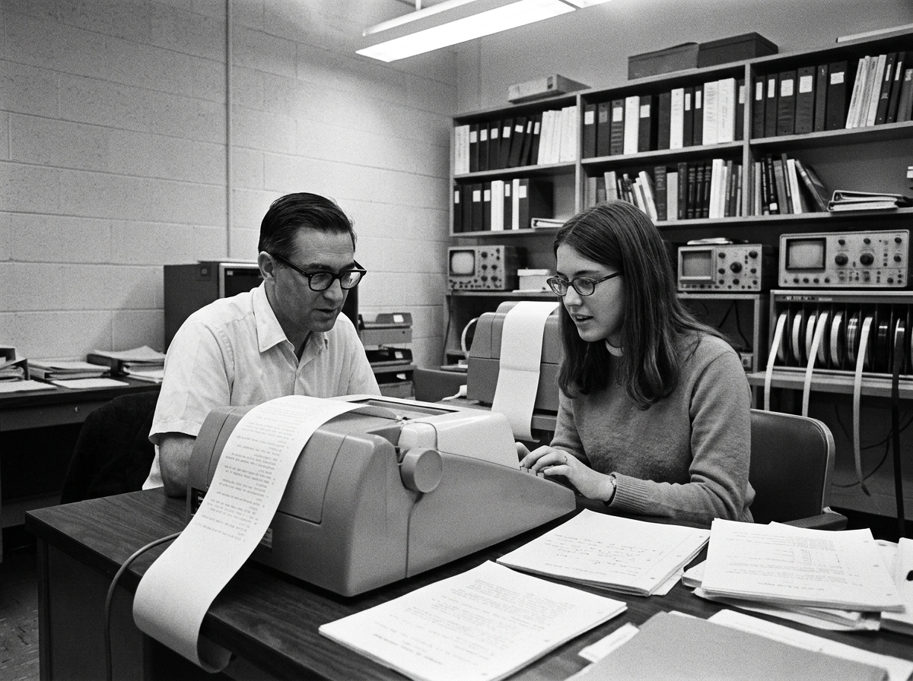

1956
Logic Theorist
Criado por Allen Newell, Herbert Simon e Cliff Shaw, provava teoremas de lógica matemática e costuma ser citado como o primeiro programa de IA.
Fonte: Newell e Simon (1956)


Inteligência artificial (IA) é a área da ciência da computação dedicada a criar máquinas e programas capazes de realizar tarefas que normalmente exigem inteligência humana, como aprender, raciocinar, reconhecer padrões e compreender a linguagem.
Não existe uma definição única. John McCarthy, o pesquisador que deu nome à área, a descreveu como a ciência e a engenharia de fazer máquinas inteligentes, em especial programas de computador inteligentes (McCARTHY, 2007). Já o manual clássico de Russell e Norvig organiza as definições em quatro ideias: sistemas que pensam como humanos, que agem como humanos, que pensam racionalmente e que agem racionalmente (RUSSELL; NORVIG, 2021).
As IAs que usamos hoje em conversas, imagens e tradução são, em sua maioria, sistemas de aprendizado de máquina. Em vez de seguir regras escritas uma a uma por programadores, elas aprendem padrões a partir de enormes quantidades de dados (LeCUN; BENGIO; HINTON, 2015). Por isso, a IA é muito boa em reconhecer padrões, mas isso não significa que ela entenda o mundo como uma pessoa, nem que suas respostas estejam sempre corretas.

A IA não nasceu de uma só invenção. Ela é resultado de ideias da matemática, da lógica, da neurociência e da computação, construídas ao longo de décadas.
Warren McCulloch e Walter Pitts propõem um modelo matemático inspirado no neurônio e mostram que redes de unidades simples podem realizar operações lógicas. É a base das redes neurais (McCULLOCH; PITTS, 1943).
Alan Turing publica "Computing Machinery and Intelligence", em que troca essa pergunta por um experimento prático, o "jogo da imitação", hoje conhecido como teste de Turing (TURING, 1950).
McCarthy, Minsky, Rochester e Shannon propõem, em 1955, um encontro de verão no Dartmouth College, nos Estados Unidos. A proposta usa o termo "inteligência artificial", e o evento de 1956 é visto como o marco de fundação do campo (McCARTHY et al., 1955).
Minsky e Papert apontam limitações dos perceptrons de camada única (MINSKY; PAPERT, 1969), e o relatório de Lighthill critica os resultados da área (LIGHTHILL, 1973). Os investimentos diminuem no período conhecido como "inverno da IA".
Rumelhart, Hinton e Williams popularizam a retropropagação, um método para treinar redes neurais com várias camadas (RUMELHART; HINTON; WILLIAMS, 1986).
Uma rede neural profunda treinada com placas de vídeo vence a competição de reconhecimento de imagens ImageNet por ampla margem (KRIZHEVSKY; SUTSKEVER; HINTON, 2012).
Pesquisadores apresentam o Transformer, modelo baseado em "atenção" que se tornou a base dos grandes modelos de linguagem usados hoje em chats de IA (VASWANI et al., 2017).
Antes dos chats de hoje, estes programas e máquinas mostraram que era possível ensinar um computador a demonstrar, aprender e conversar.
Criado por Allen Newell, Herbert Simon e Cliff Shaw, provava teoremas de lógica matemática e costuma ser citado como o primeiro programa de IA.
Fonte: Newell e Simon (1956)
Frank Rosenblatt propõe uma rede neural simples que aprende a classificar padrões a partir de exemplos. Foi construída em uma máquina, o Mark I Perceptron.
Fonte: Rosenblatt (1958)

Arthur Samuel criou na IBM um programa que melhorava seu desempenho jogando partidas. Em seu artigo, ele usa o termo "aprendizado de máquina".
Fonte: Samuel (1959)

Joseph Weizenbaum, do MIT, criou um programa que conversava por texto usando regras sobre frases. Ele mostrou como é fácil sentir-se compreendido por uma máquina.
Fonte: Weizenbaum (1966)
Atualmente, muitas pessoas estão recorrendo à inteligência artificial não apenas para tirar dúvidas, mas também para conversar, pedir conselhos e buscar algum tipo de acolhimento. Isso acontece porque a IA está disponível a qualquer momento, responde rapidamente e costuma usar uma linguagem atenciosa. Dessa forma, ela pode transmitir a sensação de que o usuário está sendo ouvido, mesmo sem existir uma pessoa do outro lado da tela.
As relações humanas, por outro lado, exigem esforço, paciência, atenção e respeito pelo espaço do outro. Uma pessoa nem sempre estará disponível, compreenderá perfeitamente o que estamos sentindo ou concordará com o que dizemos. A IA parece mais conveniente justamente porque foi desenvolvida para responder às solicitações do usuário. No entanto, apesar de conseguir manter conversas naturais, ela não possui sentimentos, consciência ou experiências próprias.
O problema começa quando essa facilidade faz com que as interações com outras pessoas pareçam trabalhosas demais. Se alguém se acostuma a procurar a IA sempre que enfrenta um conflito ou desconforto, pode começar a evitar conversas difíceis, encontros sociais e opiniões diferentes. Aos poucos, essa pessoa pode se tornar emocionalmente dependente da ferramenta e perder parte da disposição para construir e manter relações reais.
Por isso, a inteligência artificial deve ser usada como apoio, não como substituta das conexões humanas. Ela pode ajudar em pesquisas, estudos, organização de ideias e dúvidas do cotidiano, mas não deve ocupar o lugar de amigos, familiares ou profissionais qualificados. A IA pode facilitar a comunicação e até ajudar alguém a estruturar o que deseja expressar, porém os vínculos verdadeiros ainda dependem da presença, da troca e da convivência entre as pessoas.
O hábito da leitura tem perdido espaço entre muitos jovens, principalmente diante de conteúdos rápidos, redes sociais e ferramentas que oferecem respostas prontas. Manter a atenção em um livro ou texto extenso pode parecer mais difícil quando a pessoa se acostuma a receber informações curtas e imediatas. Além disso, dificuldades de interpretação podem tornar a leitura cansativa, fazendo com que alguns estudantes abandonem esse hábito ou leiam apenas quando são obrigados por exigências escolares ou acadêmicas.
Esse afastamento da literatura não representa somente uma mudança na forma de entretenimento, mas traz impactos profundos ao desenvolvimento intelectual. A leitura contribui diretamente para a expansão do vocabulário, da criatividade, da escrita e da capacidade de interpretação de textos complexos. Também permite que o leitor conheça diferentes realidades, compreenda outros pontos de vista e desenvolva suas próprias conclusões, um processo que se perde quando obras completas são substituídas apenas por resumos rápidos.
A inteligência artificial pode agravar esse problema quando passa a ser usada para produzir análises inteiras, responder atividades ou resumir livros que o estudante sequer chegou a abrir. Nesses casos, a tarefa escolar pode até ser entregue no prazo, mas o aprendizado real dificilmente será completo ou absorvido. Receber uma interpretação pronta de um algoritmo é muito diferente de acompanhar uma narrativa, perceber as nuances do texto e construir uma opinião verdadeiramente própria sobre a obra.
Ainda assim, a IA pode atuar como uma excelente ferramenta de apoio à leitura, desde que usada com critério. Ela pode explicar o significado de palavras desconhecidas, esclarecer trechos difíceis, contextualizar o momento histórico de uma obra e ajudar na própria organização de uma análise textual. O caminho mais adequado é realizar a leitura atenta primeiro e recorrer à ferramenta apenas quando surgir uma dúvida pontual, garantindo que a tecnologia contribua para a compreensão sem anular o esforço necessário para aprender.
Com a facilidade de acesso à informação, criou-se o hábito de esperar que qualquer dúvida seja resolvida imediatamente. Buscadores, redes sociais e inteligências artificiais oferecem respostas em poucos segundos, o que torna a pesquisa muito mais prática no dia a dia. No entanto, essa velocidade também pode diminuir a disposição dos estudantes para investigar, refletir e desenvolver uma solução por conta própria.
O problema central não está em encontrar uma resposta rapidamente, mas em acreditar que encontrá-la significa necessariamente compreender o assunto de forma profunda. Quando alguém recebe uma explicação pronta e apenas a reproduz, pode ter a falsa impressão de que aprendeu, mesmo sem conseguir explicar o conteúdo com as próprias palavras. Com isso, o resultado final passa a ser mais valorizado do que o processo de raciocínio que deveria levar até ele.
Essa busca constante por rapidez também pode afetar a atenção e a memória a longo prazo. Se todas as informações parecem estar sempre disponíveis ao alcance de um clique, existe menos incentivo para guardá-las ou relacioná-las com conhecimentos anteriores. Aos poucos, atividades que exigem concentração, leitura e análise podem parecer desnecessariamente demoradas, embora sejam justamente essas etapas que tornam o aprendizado mais duradouro.
Nesse contexto, a IA deve ser usada para acompanhar o raciocínio, e não para eliminá-lo do processo educacional. Antes de pedir uma resposta automática, o usuário pode tentar compreender a questão, levantar hipóteses e registrar o que já sabe sobre o tema. Depois, pode utilizar a ferramenta para comparar ideias, esclarecer dúvidas específicas ou receber comentários sobre o que produziu, mantendo o protagonismo do próprio aprendizado.
O uso frequente da inteligência artificial em atividades que antes exigiam esforço humano pode colocar o pensamento crítico em segundo plano. Quando o usuário transfere constantemente para a tecnologia a tarefa de formular ideias, resolver problemas e tomar decisões, deixa de exercitar habilidades necessárias para pensar de forma independente. Com o tempo, a falta desse estímulo cognitivo pode comprometer a autonomia intelectual do indivíduo.
A facilidade de receber respostas completas pode criar uma dependência profunda, inclusive para a realização de tarefas cotidianas simples. Além disso, como a IA costuma apresentar informações com clareza e segurança, algumas pessoas tendem a aceitá-las como verdades absolutas, sem verificar sua origem ou coerência. No entanto, essas ferramentas também cometem erros, apresentam dados desatualizados ou reproduzem visões limitadas, tornando indispensável o ato de questionar e conferir o conteúdo recebido.
O pensamento crítico envolve a capacidade de comparar informações, identificar contradições, avaliar a força dos argumentos e, finalmente, formar uma opinião própria. Essas capacidades humanas fundamentais só se desenvolvem e se fortalecem com a prática constante. Quando todas as etapas do raciocínio são entregues à tecnologia, o usuário pode até concluir a tarefa técnica, mas perde a oportunidade de exercitar sua memória, criatividade e capacidade de argumentação.
Por fim, a inteligência artificial deve fazer parte do processo de construção do conhecimento, e não produzir sozinha o resultado final. Ela pode ser muito útil para ajudar a organizar ideias, sugerir diferentes perspectivas sobre um tema, apontar falhas em um argumento e elaborar rascunhos iniciais. Ainda assim, cabe exclusivamente ao usuário analisar as sugestões, verificar as fontes e decidir o que realmente faz sentido, utilizando a tecnologia como apoio sem abrir mão da própria reflexão.
Apesar de vivermos cada vez mais conectados, muitas pessoas continuam se sentindo isoladas e sozinhas no dia a dia. A facilidade de conversar com uma inteligência artificial a qualquer momento pode oferecer uma sensação imediata de companhia, funcionando como uma alternativa atraente. Esse cenário se torna ainda mais comum para quem tem dificuldade de se abrir com outras pessoas ou simplesmente não encontra alguém disponível no momento exato em que precisa conversar.
Essa preferência ocorre porque a IA responde rapidamente, mantém o foco total no usuário e nunca demonstra impaciência ou cansaço. Por isso, conversar com ela pode parecer muito mais simples do que lidar com as relações humanas, que naturalmente envolvem diferenças, limites, frustrações e conflitos. No entanto, é preciso lembrar que essa sensação de acolhimento não corresponde a um vínculo real; a inteligência artificial apenas identifica padrões na linguagem para produzir respostas adequadas, sem sentir afeto, preocupação ou empatia.
O uso ocasional da ferramenta para organizar pensamentos ou esclarecer uma dúvida não significa, por si só, que alguém ficará isolado do mundo. O risco real aparece quando a tecnologia se torna a principal ou única forma de companhia do indivíduo. Ao evitar encontros presenciais, conversas difíceis e situações sociais desafiadoras, a pessoa perde oportunidades valiosas de criar vínculos autênticos, tornando as interações reais cada vez mais difíceis e alimentando um ciclo que aumenta ainda mais a solidão.
Diante disso, o uso correto da IA deve ser tratá-la sempre como uma ponte para o mundo, e não como o destino final. A ferramenta pode ajudar alguém a ensaiar uma conversa importante, organizar sentimentos ou planejar como procurar apoio, mas nunca deve substituir amigos, familiares ou ajuda profissional. Combater a solidão de forma eficaz exige investir em relações verdadeiras, onde existam presença física, troca mútua, cuidado real e participação ativa de ambas as partes.
O uso frequente da inteligência artificial em atividades que antes exigiam esforço humano pode colocar o pensamento crítico em segundo plano. Quando o usuário transfere constantemente para a tecnologia a tarefa de formular ideias, resolver problemas e tomar decisões, deixa de exercitar habilidades necessárias para pensar de forma independente. Com o tempo, a falta desse estímulo cognitivo pode comprometer a autonomia intelectual do indivíduo.
A facilidade de receber respostas completas pode criar uma dependência profunda, inclusive para a realização de tarefas cotidianas simples. Além disso, como a IA costuma apresentar informações com clareza e segurança, algumas pessoas tendem a aceitá-las como verdades absolutas, sem verificar sua origem ou coerência. No entanto, essas ferramentas também cometem erros, apresentam dados desatualizados ou reproduzem visões limitadas, tornando indispensável o ato de questionar e conferir o conteúdo recebido.
O pensamento crítico envolve a capacidade de comparar informações, identificar contradições, avaliar a força dos argumentos e, finalmente, formar uma opinião própria. Essas capacidades humanas fundamentais só se desenvolvem e se fortalecem com a prática constante. Quando todas as etapas do raciocínio são entregues à tecnologia, o usuário pode até concluir a tarefa técnica, mas perde a oportunidade de exercitar sua memória, criatividade e capacidade de argumentação.
Por fim, a inteligência artificial deve fazer parte do processo de construção do conhecimento, e não produzir sozinha o resultado final. Ela pode ser muito útil para ajudar a organizar ideias, sugerir diferentes perspectivas sobre um tema, apontar falhas em um argumento e elaborar rascunhos iniciais. Ainda assim, cabe exclusivamente ao usuário analisar as sugestões, verificar as fontes e decidir o que realmente faz sentido, utilizando a tecnologia como apoio sem abrir mão da própria reflexão.

“A educação é a arma mais poderosa que você pode usar para mudar o mundo.”

“Ensinar não é transferir conhecimento, mas criar as possibilidades para a sua própria produção ou a sua construção.”
A inteligência artificial é uma ótima ferramenta quando faz parte do caminho, e não quando assume o lugar das pessoas, do estudo e do seu próprio raciocínio. Três hábitos ajudam a usá-la bem.

A IA responde rápido e nunca demonstra cansaço, mas não sente nem se preocupa com você. Trate-a como uma ponte para o mundo, e não como o destino final.
Receber uma resposta pronta não é o mesmo que aprender. É o esforço de ler, tentar e raciocinar que faz o conhecimento durar.

A IA escreve com clareza e segurança, mas também erra, usa dados desatualizados e repete visões limitadas. A decisão final é sua.